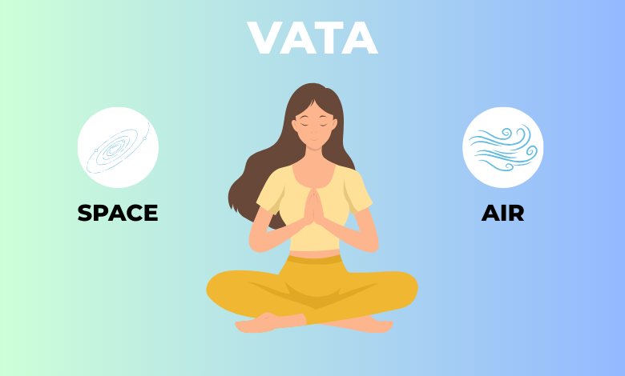
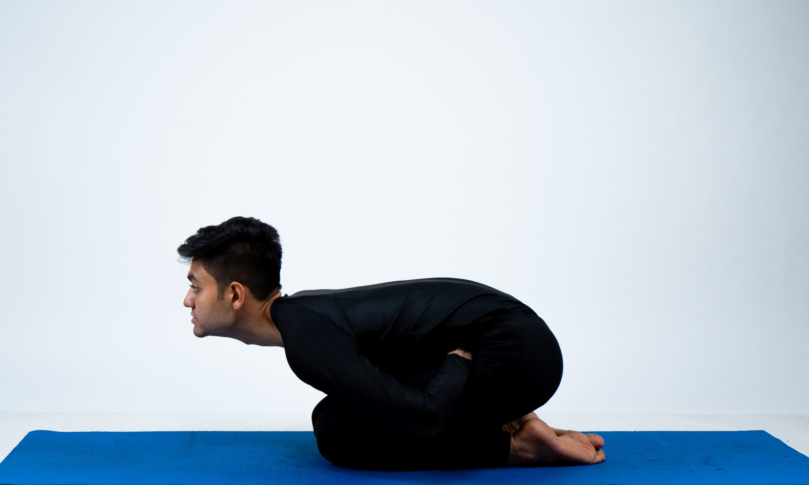
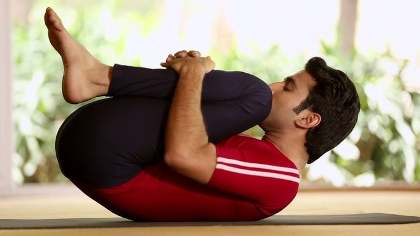

Vata Dosha is made of air and space.It controls all
movement in the body and mind—like breathing,
talking, and thinking.When Vata is balanced, you feel
creative, energetic, and clear-headed.But if
it's out of balance, it can cause dry skin, worry, trouble
sleeping, or feeling restless.
Tips for Balancing Vata Dosha
Foods to Cut down from Diet:
Dry Fruits,Tea,Coffee,Raw vegetables,Sour food,Refrigerated food.
Foods to consume to Balance Vata dosha:
Cold pressed oils,Ghee,Dairy products.
Also Body massage with oil can help to balance Vata dosha.
Yoga Asanas to Balance Vata Dosha:
1.Mandukasana

2.Pawanmuktasana

3.Pranayam:Anulom Vilom